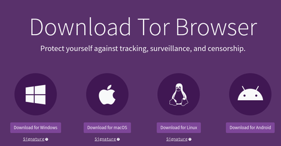
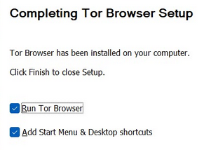
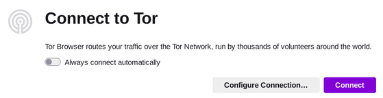
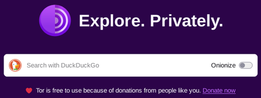
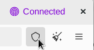
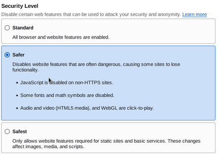

How to install and use Tor Browser
April 12, 2025
Tor browser protects you from fingerprinting, and protects your privacy online, stopping tracking and mass surveillance from big corporations and governments.
To install Tor Browser visit the Tor Browser Download Page and select your platform.
Once you have downloaded it you can install it using the instructions for your system on the Tor Browser Install Guide
For most platforms it is pretty simple, just an installer. Like Windows just run the .exe and go thru the install, and at the end ensure you check these 2 options to start Tor browser, and add it to your start menu to launch from the desktop. If you do this you can now launch Tor by double clicking the icon on your desktop.
Now that you have gotten Tor installed for your system, if you don't already have it launched launch it.
Just click connect to Tor, and thats it!
Now thats assuming you are somewhere that does't have censorship. If you are then it will have you select your country and get you connected.

Lets make this safer without breaking any sites, in the top right click the shield icon.
Upon clicking on it you will see this menu, click settings.

It will take you to the settings page where you can select your security level.
Basically:
Standard: Regular browser settings, will not break websites
Safer: A balance in between Standard and Safest, will not break most sites (never had issues)
Safest: Max protection but will break most common sites, not recommended for daily work
I will pick safer as I think it will work just fine.
That is all, now you can search without being surveiled!
If you want to visit an Onion site (Onion websites provide more privacy for you and the site owner), you can go to this website as an onion site! Just copy and paste this link in.
mq566dxi5khwtbh6issw5q66j7tgx2glgxdkiydlrf7siihimay2blad.onionGreat job!!! You can now browse without being tracked!